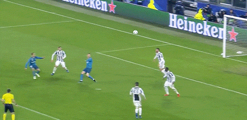
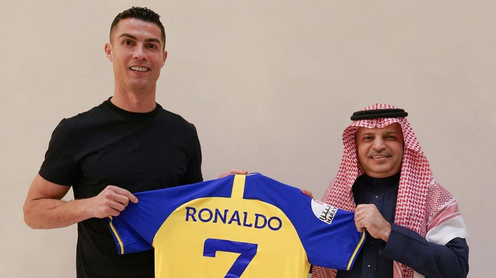
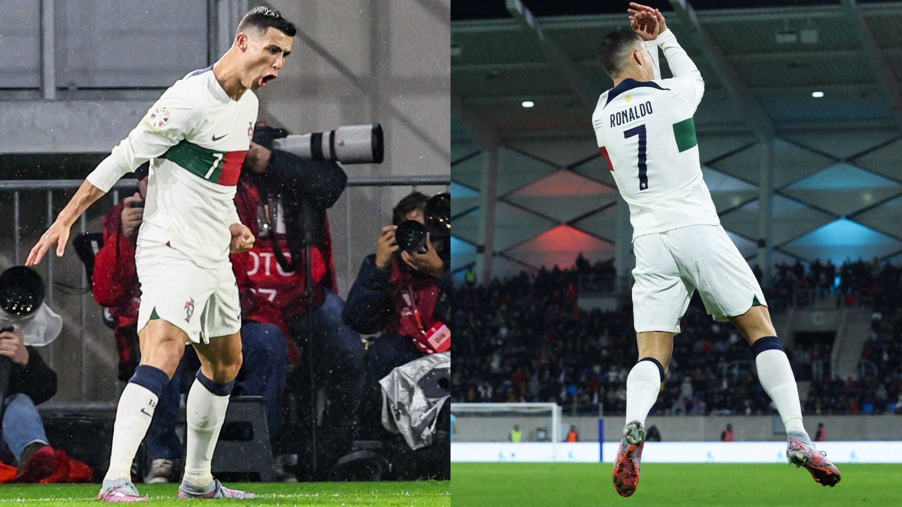
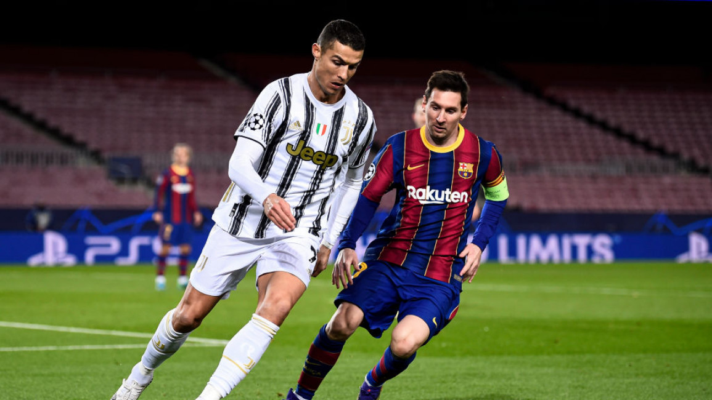

About Cristiano Ronaldo
Cristiano Ronaldo dos Santos Aveiro is a Portuguese professional footballer who plays as a forward for and captains both Saudi Pro League club Al Nassr and the Portugal national team . Widely regarded as one of the greatest players of all time , Ronaldo has won five Ballon d'Or awards , a record three UEFA Best Player in Europe , and four European Golden Shoes , the most by a European player. He has won 33 trophies in his career, including seven league titles, five UEFA Champions Leagues , the UEFA European Championship and the UEFA Nations League . Ronaldo holds the records for most appearances (183), goals (140) and assists (42) in the Champions League, goals in the European Championship (14), international goals (123) and international appearances (201) . He is one of the few players to have made over 1,100 professional career appearances , and has scored over 850 official senior career goals for club and country, making him the highest goalscorer of all time .
Ronaldo's Previous Clubs :-
Sporting Lisbon 2002 - 2003Ronaldo's Current Club

On 30 December 2022, Saudi club Al Nassr reached an agreement for Ronaldo to join the club effective 1 January 2023, signing a contract until 2025.
Ronaldo received the highest football salary in history, worth €200 million per year. This included an annual guaranteed football salary of €90 million,
with commercial and sponsorship deals included bringing his total annual salary to €200 million.
He was also reportedly paid a signing-on bonus in the region of €100 million.
According to sources, Ronaldo rejected a move to Major League Soccer club Sporting Kansas City to join Al Nassr.
Ronaldo's signing for Al-Nassr resulted in increased popularity both domestically and internationally of the Saudi Pro League,
with various European players such as Karim Benzema , Sadio Mané , N'Golo Kanté , Rúben Neves , Riyad Mahrez , Roberto Firmino and Neymar
moving to the Saudi Pro League during the summer transfer window, crediting Ronaldo as one of the main factors for moving to the league.
Goal Celebrations
Ronaldo has adopted several goal celebrations throughout his career, including one particular celebration which gained widespread coverage in the media, when he squatted and stared directly into a camera on the sidelines of the pitch with his hand on his chin. After scoring a goal, he usually celebrates with a "storming jump" and "turn", before "landing in spread-eagled fashion" into his "signature power stance", while usually simultaneously exclaiming "Sí" (Spanish and Italian for "yes"). This trademark celebration has been dubbed the "Sii" in the media.
Rivalry with Messi
Both Ronaldo and Lionel Messi have scored in multiple UEFA Champions League finals and have regularly broken the 50-goal barrier in a single season. Sports journalists and pundits regularly weigh the individual merits of both players in an attempt to argue who they believe is the best player in modern football or in the history of the game. It has been compared to several sports rivalries, among them the Muhammad Ali–Joe Frazier rivalry in boxing, the Borg–McEnroe rivalry in tennis and the Senna–Prost rivalry from Formula One motor racing. Some commentators choose to analyse the differing physiques and playing styles of the two. Part of the debate revolves around the contrasting personalities of the two players, as Ronaldo is sometimes depicted as an arrogant and theatrical showoff, while Messi is portrayed as a shy, humble character.
In a 2012 interview, Ronaldo commented on the rivalry, saying: "I think we push each other sometimes in the competition, this is why the competition is so high." Alex Ferguson, Ronaldo's manager during his time at Manchester United, opined: "I don't think the rivalry against each other bothers them. I think they have their own personal pride in terms of wanting to be the best." Messi himself denied any rivalry, saying that it was "only the media, the press, who wants us to be at loggerheads but I've never fought with Cristiano." Responding to the claims that he and Messi do not get on well on a personal level, Ronaldo commented: "We don't have a relationship outside the world of football, just as we don't with a lot of other players." Ronaldo added that in years to come he hopes they can laugh about it together, stating: "We have to look on this rivalry with a positive spirit, because it's a good thing." Representing archrivals Barcelona and Real Madrid, the two players faced each other at least twice every season in the world's biggest club game, El Clásico, which is among the world's most viewed annual sporting events.